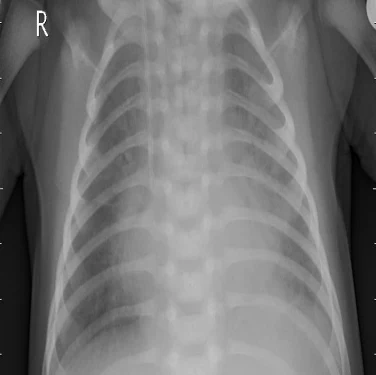
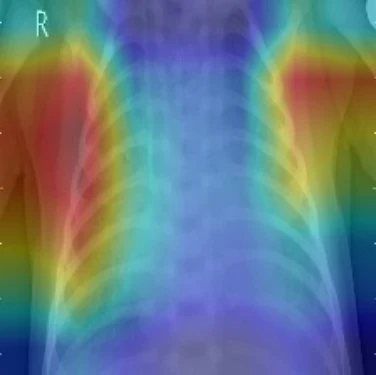

Machine learning that shows its reasoning.
I'm Blessing, a data science graduate in Harare. My capstone flags pneumonia on chest X-rays and highlights the lung regions behind every call, so a clinician can check the model instead of trusting it blindly.
Open to remote junior data science, machine learning and computer vision roles.


Original X-ray What the model usedPneumoInsight
BSc Honours capstone, University of Zimbabwe, 2025 to 2026
PneumoInsight is a web application for explainable pneumonia detection. A clinician uploads a chest X-ray and gets a diagnosis, a confidence tier and a heatmap of the regions that drove the decision. Every result can be exported as a PDF report.
PneumoInsight is an academic research prototype and not a medical device. It runs on my own machine, so this page shows screenshots in place of a live demo. I'm happy to walk through it on a call.
Three models, one winner
I trained a custom CNN, ResNet-50 and DenseNet121 on the public Kermany pediatric chest X-ray dataset and compared them on its 624-image test set, which played no part in training. DenseNet121 scored highest on accuracy, recall, F1 and AUC, so it powers the application. For screening, recall is the number to watch, because a missed case costs more than a false alarm. DenseNet121 caught 367 of the 390 pneumonia cases.
| Model | Accuracy | Precision | Recall | F1 | AUC |
|---|---|---|---|---|---|
| Custom CNN | 89.10% | 0.9149 | 0.9103 | 0.9126 | 0.9399 |
| ResNet-50 | 78.04% | 0.7949 | 0.8744 | 0.8327 | 0.8523 |
| DenseNet121 (in production) | 89.74% | 0.8995 | 0.9410 | 0.9198 | 0.9589 |
Explanations a clinician can inspect
Guided Grad-CAM turns each prediction into a heatmap over the original X-ray. Next to it the app shows the diagnosis, the confidence score and a tier (high, moderate or low), so uncertain cases stand out. The PDF report repeats all of this in plain language for the patient file.
Built as a full application
The model sits inside a Flask application with role-based access for admins, doctors, radiologists and nurses. It keeps a patient history that records who ran each assessment and when, generates PDF reports with ReportLab and exports analytics to Excel.
PresentationBrowser
- login.htmlAuthentication
- dashboard.htmlX-ray upload form
- history.htmlPatient records
- admin.htmlUser management
ApplicationFlask server
- Inference engineDenseNet121 prediction and confidence
- Grad-CAM moduleGradientTape heatmaps with an OpenCV overlay
- Ten routesLogin, dashboard, history and more
- ReportsPDF with ReportLab, Excel with Pandas
DataStorage
- SQLite databaseUser and patient record tables
- File storageOriginal X-rays and Grad-CAM overlays
Every upload follows the same path. The file name is sanitized, the image is resized to 224 by 224 and rescaled, and DenseNet121 outputs a sigmoid score. Above 0.5 the result is pneumonia, otherwise normal. The app then formats the confidence, assigns a patient ID, generates the Grad-CAM heatmap and saves the record before returning to the history view.
The custom CNN stacks four convolution blocks of 32, 64, 128 and 256 filters, each with batch normalization and max pooling. The first two blocks learn low-level features and the last two learn high-level ones, with dropout rising from 0.3 to 0.4. A 512-unit dense layer with 0.5 dropout feeds the sigmoid output.
Documentation
I wrote the project up as a six-chapter thesis and an IEEE-style technical paper, and presented it in a 17-slide oral defense.
Data projects
Python, SQL, Excel, Power BI and Tableau, from raw data to a finished view.
-
Scraping Wikipedia's top 100 companies
Python, web scraping
Scrapes the list of the world's largest companies from Wikipedia and saves it as a clean CSV, ready for analysis.
View on GitHub -
Cleaning the world layoffs dataset
MySQL
Removes duplicates, standardizes values, handles nulls and blanks, and drops unneeded columns so the data is safe to analyze.
View on GitHub -
Exploring the world layoffs dataset
MySQL, exploratory analysis
Ranks countries and years by layoffs. The United States led with 256,559 layoffs between 2020 and 2023, and 2022 was the peak year at 160,661.
View on GitHub -
Airbnb revenue dashboard
Tableau
Shows how revenue moves through the year: lowest in January, climbing from February to April and peaking in December. It recommends listing in early February or running low-season promotions.
View on Tableau Public -
Salary survey dashboard
Power BI
Built from a professional survey. It compares job titles with salaries, shows preferred programming languages by profession and uses gauges for salary satisfaction. Click a job title to filter every chart.
View on GitHub -
Bike sales analysis
Excel
Cleans, analyzes and visualizes a Kaggle bike sales dataset. Covers average income per purchase, customer age brackets and commute distance, with filters for marital status, region and education.
View on GitHub
About
I graduated from the University of Zimbabwe with a BSc Honours in Data Science and Informatics (Upper Second Class). I like projects that run all the way from raw data to something a non-technical person can use, and I write the documentation to match.
I'm looking for remote junior data scientist, machine learning engineer, computer vision engineer or Python and Flask backend roles.
- Programming and web
- Python, Flask, SQLAlchemy, Flask-Migrate, REST APIs
- Machine learning
- CNNs, DenseNet121, ResNet-50, custom architectures, transfer learning, TensorFlow and Keras, Guided Grad-CAM, model evaluation and explainability
- Data analysis
- Excel (advanced), Pandas, NumPy, exploratory analysis, data cleaning and preparation, web scraping with BeautifulSoup
- Databases
- PostgreSQL, MySQL, SQL, query optimization, Alembic
- Visualization and BI
- Power BI, Tableau, Excel dashboards
- Cloud and tools
- AWS, Git and GitHub, VS Code
University of Zimbabwe, Department of Analytics and Informatics, 2026
Contact
Harare, Zimbabwe. Available for remote work.
If you're hiring or want to see PneumoInsight running, write to me.
chikumbirikeblessing@gmail.com